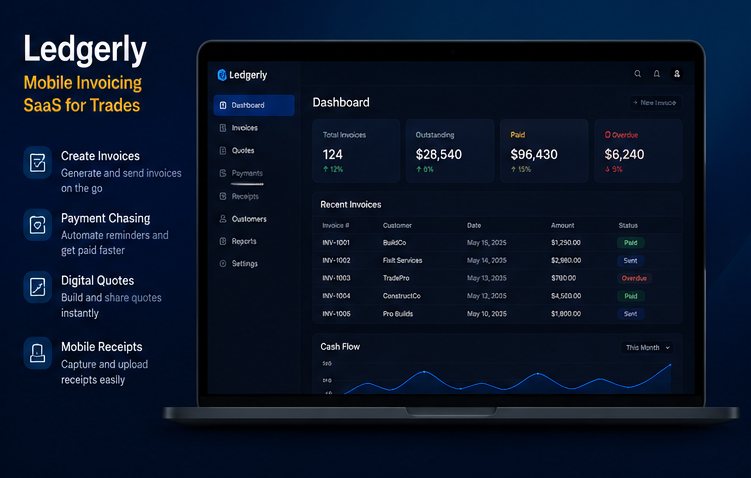
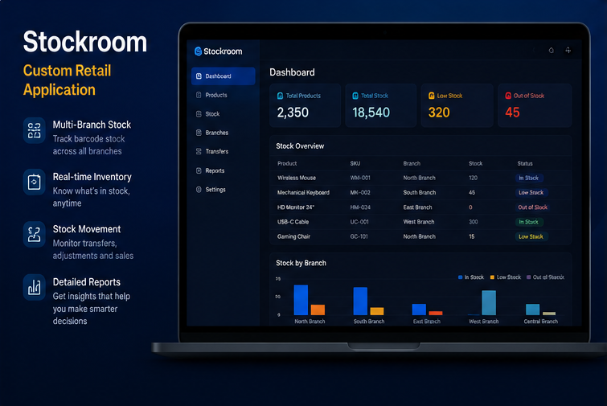
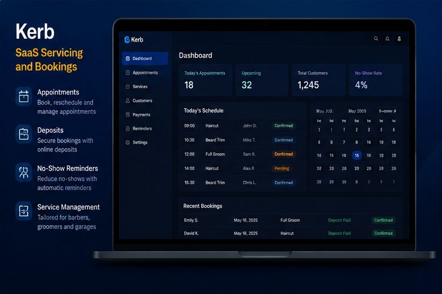

Built via React with backend and management functionality using Node and Postgres
Rota is a hospitality staff scheduling and workforce management platform designed to help businesses organise employee shifts, manage availability and coordinate teams more efficiently.
Rota is designed for hospitality businesses including restaurants, hotels, bars, cafés and other businesses that manage shift-based teams.
Rota allows businesses to organise employee shifts and create clearer schedules, making it easier for managers to coordinate their workforce.
Yes. Rota provides tools for managing workforce availability, helping businesses plan shifts around the people they have available.
Yes. Rota is designed to help businesses organise teams and manage their scheduling requirements from a central platform.
Digital scheduling software can reduce manual administration, improve visibility of shifts and make it easier for managers and employees to stay aligned.

Ledgerly-Invoicing software for Tradespeople
Ledgerly is a mobile-optimised invoice management software built for mobile sole traders, plumbers, and electricians. Users capture on-site job photos to generate quotes instantly and deploy automated payment chasing workflows. Core Features: Automatic payment chasing, digital quoting engines, mobile receipt uploads.
Active Scale: 150 active business accounts
Infrastructure: Built via Typescript with automated transaction processing powered by Stripe on AWS
Ledgerly is mobile invoicing software designed for tradespeople and service businesses that need to create quotes, send invoices, manage receipts and follow up on payments.
Ledgerly is designed for tradespeople, contractors and service-based businesses that need a simple way to manage invoicing while working on the move.
Ledgerly is designed around mobile-friendly invoicing, allowing businesses to manage their invoicing workflow while away from the office.
Yes. Ledgerly includes digital quoting functionality, making it easier for businesses to prepare and share quotes with customers.
Ledgerly supports automated payment chasing, helping businesses follow up on outstanding payments without relying entirely on manual reminders.
Yes. Ledgerly includes mobile receipt uploading, making it easier to keep business records organised while working on-site.

Stockroom - Barcode Inventory Software for Retail Chains
Stockroom is a custom inventory management system designed for multi-branch retail businesses. It handles live barcode stock counts across five physical branches of an independent hardware chain, successfully replacing a legacy system of four disconnected spreadsheets.
Active Scale: 2 working branches
Infrastructure: Built using a foundation of Python, Django, Postgres with dynamic styling using XML
Multi-branch inventory management software lets a retail business track stock levels, locations and movement across more than one site from a single, central platform, replacing separate spreadsheets or manual counts per branch. Stockroom is built specifically for this, giving multi-branch retailers one place to see and manage inventory across every location.
Stockroom is retail inventory management software designed to help businesses track products, monitor stock levels and manage inventory across multiple branches.
Stockroom is particularly suited to independent retailers and businesses operating multiple branches that need better visibility of their inventory.
Yes. Stockroom is designed to help businesses monitor stock across multiple branches and understand where inventory is located.
Yes. Stockroom supports barcode-based stock counting and inventory management.
By providing clearer visibility of inventory and stock levels, Stockroom can help businesses identify low-stock and out-of-stock products and make better-informed decisions.
Stockroom is designed to provide visibility into stock movement and transfers, helping businesses better understand how inventory moves throughout their operation.

Kerb - Appointment Booking Software for Service Providers SaaS Servicing and bookings
Kerb is a software-as-a-service (SaaS) appointment engine for barbershops, pet groomers, and automotive garages. The tool processes upfront customer deposits and distributes automated text/email no-show reminders.
Active Scale: 50 active accounts
Infrastructure: Built via React and Node with transaction processing powered by Stripe
Appointment booking software reduces no-shows by combining automated reminders with upfront deposits, giving customers a clear incentive to attend and businesses fewer missed bookings to absorb. Kerb builds both into its platform, sending automated reminders and collecting deposits so appointment-based businesses lose less revenue to no-shows.
Kerb is appointment booking and service management software designed to help businesses manage customer bookings, deposits, reminders and daily schedules.
Kerb is designed for appointment-based businesses including barbers, groomers, garages and other service businesses.
Yes. Kerb provides appointment booking functionality that helps businesses organise customer bookings and manage their schedules.
Yes. Kerb supports deposits, helping businesses secure appointments and reduce the financial impact of missed bookings.
Kerb uses appointment reminders and deposit functionality to help businesses encourage customers to attend their scheduled appointments.
Yes. Kerb is designed around service-based businesses that may offer different appointments and services to their customers.